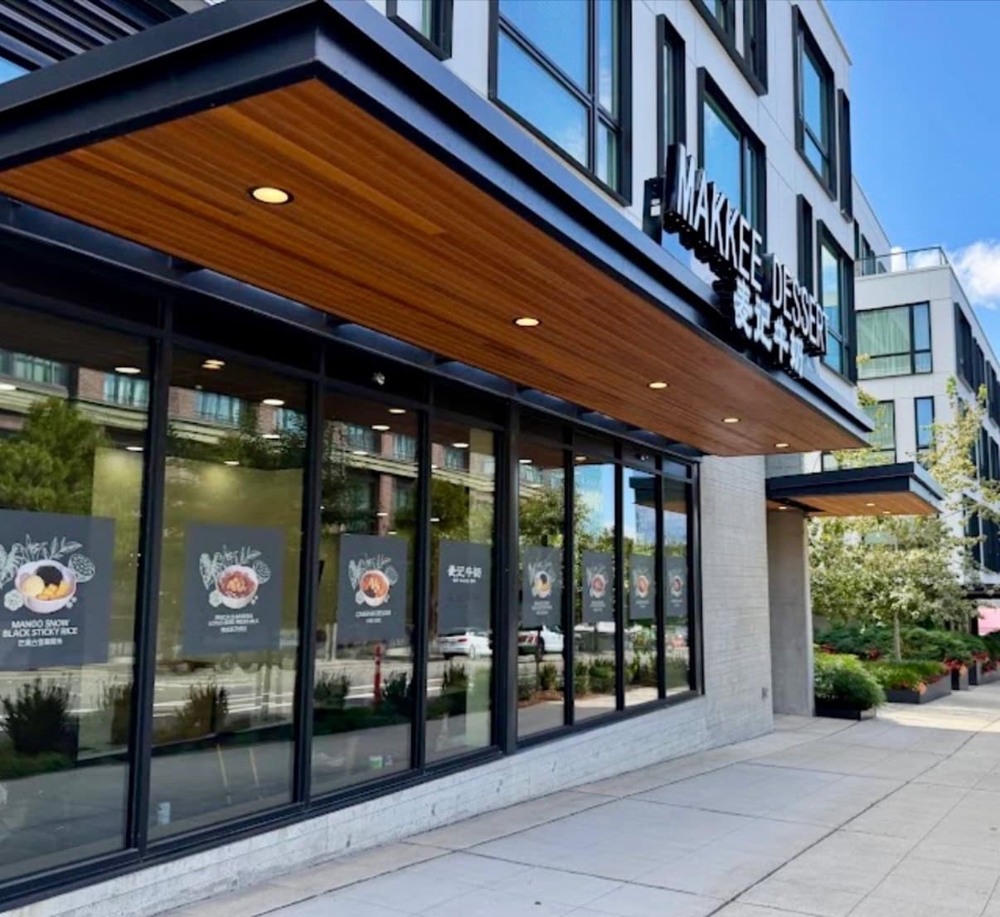
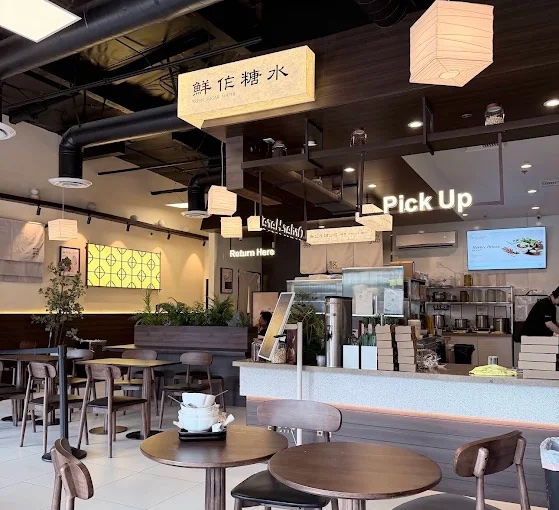
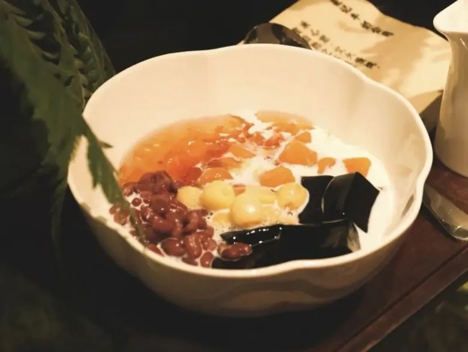

Watermelon Coconut is here for the season
Freshly cut watermelon in rich coconut milk, with chewy taro balls, mini rice balls, red beans, cooling jelly, and crispy coconut chips. Served cold only.
See the seasonal menuWhat's new, what's in season, and what people are saying about Makkee shops across the U.S.

Freshly cut watermelon in rich coconut milk, with chewy taro balls, mini rice balls, red beans, cooling jelly, and crispy coconut chips. Served cold only.
See the seasonal menuThe Infatuation’s roundup of new LA spots calls out Makkee’s Koreatown outpost, from the Cantonese dessert chain with over a thousand locations in China.
Read the guide ↗Two more Makkee shops are on the way, bringing fresh-milk sweet soups to Brooklyn and the South Bay. Follow @makkeedessert_usa for opening dates.
See all locationsA look at Makkee’s first Washington location on Main Street, and the dessert soups behind a brand with about 1,000 shops in China.
Read article ↗
Makkee opens on the retail level of Surrey on Main, with signature bowls like the Makkee Deluxe and Mango Pomelo Sago.
Read article ↗
A look at our first U.S. shop: creamy dessert bowls topped with taro balls, grass jelly, peach gum, lotus seeds, fresh mango, or pomelo, served hot or cold.
Read review ↗Makkee Dessert 麦记牛奶 is now serving fresh Asian desserts at 10797 Main St, every day from 12 PM to 9 PM. Come stop by and say hi.
Find usMakkee Dessert 麦记牛奶 is now serving at 3450 W 6th St, Ste 108, open late every night, until 12:30 AM on Fridays and Saturdays.
Find us
Our first Bay Area shop opened on Castro Street in early July, with waits of up to 40 minutes for bowls like the Makkee Deluxe and Mango Pomelo Sago.
Read article ↗